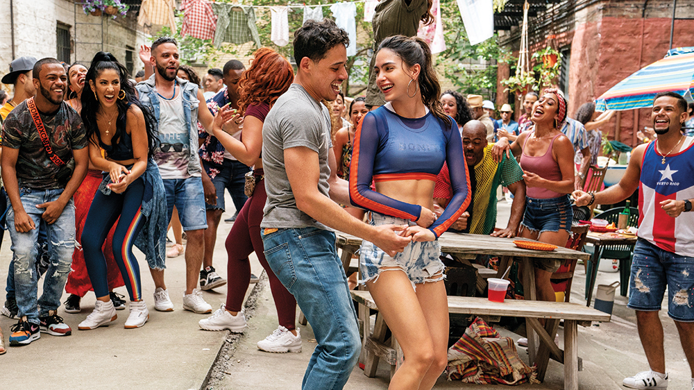

IN THE HEIGHTS
PG-13 || 2 hr 23 min || Drama, Music/Performing Arts
Anthony Ramos , Lin‑Manuel Miranda; Melissa Barrera; Leslie Grace
In Washington Heights, N.Y., the scent of warm coffee hangs in the air just outside of the 181st St. subway stop, where a kaleidoscope of dreams rallies a vibrant and tight-knit community. At the intersection of it all is a likable and magnetic bodega owner who hopes, imagines and sings about a better life.